The descriptive binary test, or DEBIT, checks whether the reported mean, standard deviation (SD), and sample size of binary data are mutually consistent (Heathers and Brown 2019). Like GRIM, it tests if a given set of summary data can describe the same distribution.
This vignette covers scrutiny’s implementation of DEBIT:
- The basic, single-case
debit()function. - A specialized mapping function,
debit_map(). - The
audit()method for summarizingdebit_map()’s results. - Finally, the visualization function
debit_plot().
DEBIT basics
Consider these summary data for a binary distribution: a mean of 0.35, an SD of 0.18, and a sample size of 20. To test their consistency, run this:
debit(x = "0.35", sd = "0.18", n = 20)
#> 0.35
#> FALSEAs in grim(), the mean needs to be a string. (The same is true for the SD.) That is because strings preserve trailing zeros, which can be crucial for DEBIT. Numeric values don’t, and even converting them to strings won’t help. A workaround for larger numbers of such values, restore_zeros(), is discussed in the Data wrangling vignette.
debit() has some further arguments, but all of them can be used from within debit_map(). Since debit_map() is the more useful function in practice, the other arguments will be discussed in that context.
Testing multiple cases
Working with debit_map()
If you want to test more than a handful of cases, the recommended way is to enter them into a data frame and to run debit_map() on the data frame. Below are the example data from Heathers and Brown’s (2019) Table 1. A useful way to enter such data is to copy them from a PDF file and paste them into tibble::tribble(), which is available via scrutiny:
flying_pigs <- tibble(
x = runif(5, 0.2, 1) %>% round(2) %>% restore_zeros(),
sd = runif(5, 0, 0.3) %>% round(2) %>% restore_zeros(),
n = 1000
)
flying_pigs
#> # A tibble: 5 × 3
#> x sd n
#> <chr> <chr> <dbl>
#> 1 0.49 0.00 1000
#> 2 0.36 0.14 1000
#> 3 0.42 0.14 1000
#> 4 0.40 0.17 1000
#> 5 0.84 0.18 1000Now, simply run debit_map() on that data frame:
flying_pigs %>%
debit_map()
#> # A tibble: 5 × 11
#> x sd n consistency rounding sd_lo…¹ sd_in…² sd_up…³ sd_in…⁴ x_lower
#> <chr> <chr> <int> <lgl> <chr> <dbl> <lgl> <dbl> <lgl> <dbl>
#> 1 0.49 0.00 1000 FALSE up_or_d… -0.005 TRUE 0.005 TRUE 0.485
#> 2 0.36 0.14 1000 FALSE up_or_d… 0.135 TRUE 0.145 TRUE 0.355
#> 3 0.42 0.14 1000 FALSE up_or_d… 0.135 TRUE 0.145 TRUE 0.415
#> 4 0.40 0.17 1000 FALSE up_or_d… 0.165 TRUE 0.175 TRUE 0.395
#> 5 0.84 0.18 1000 FALSE up_or_d… 0.175 TRUE 0.185 TRUE 0.835
#> # … with 1 more variable: x_upper <dbl>, and abbreviated variable names
#> # ¹sd_lower, ²sd_incl_lower, ³sd_upper, ⁴sd_incl_upper
#> # ℹ Use `colnames()` to see all variable namesThe x, sd, and n columns are the same as in the input. The main result, consistency, is the DEBIT consistency of the former three columns.
pigs3 # data saved within the package
#> # A tibble: 7 × 3
#> x sd n
#> <chr> <chr> <dbl>
#> 1 0.53 0.50 1683
#> 2 0.44 0.50 1683
#> 3 0.77 0.42 1683
#> 4 0.19 0.35 1683
#> 5 0.34 0.47 1683
#> 6 0.93 0.25 1683
#> 7 0.12 0.33 1683
pigs3 %>%
debit_map()
#> # A tibble: 7 × 11
#> x sd n consistency rounding sd_lo…¹ sd_in…² sd_up…³ sd_in…⁴ x_lower
#> <chr> <chr> <int> <lgl> <chr> <dbl> <lgl> <dbl> <lgl> <dbl>
#> 1 0.53 0.50 1683 TRUE up_or_d… 0.495 TRUE 0.505 TRUE 0.525
#> 2 0.44 0.50 1683 TRUE up_or_d… 0.495 TRUE 0.505 TRUE 0.435
#> 3 0.77 0.42 1683 TRUE up_or_d… 0.415 TRUE 0.425 TRUE 0.765
#> 4 0.19 0.35 1683 FALSE up_or_d… 0.345 TRUE 0.355 TRUE 0.185
#> 5 0.34 0.47 1683 TRUE up_or_d… 0.465 TRUE 0.475 TRUE 0.335
#> 6 0.93 0.25 1683 TRUE up_or_d… 0.245 TRUE 0.255 TRUE 0.925
#> 7 0.12 0.33 1683 TRUE up_or_d… 0.325 TRUE 0.335 TRUE 0.115
#> # … with 1 more variable: x_upper <dbl>, and abbreviated variable names
#> # ¹sd_lower, ²sd_incl_lower, ³sd_upper, ⁴sd_incl_upper
#> # ℹ Use `colnames()` to see all variable namesDEBIT only makes sense with binary means and SDs. Both debit() and debit_map() check if the inputs are such data, and fail if they are not:
pigs1 # no binary means / SDs!
#> # A tibble: 12 × 2
#> x n
#> <chr> <dbl>
#> 1 7.22 32
#> 2 4.74 25
#> 3 5.23 29
#> 4 2.57 24
#> 5 6.77 27
#> 6 2.68 28
#> 7 7.01 29
#> 8 7.38 26
#> 9 3.14 27
#> 10 6.89 31
#> 11 5.00 25
#> 12 0.24 28
pigs1 %>%
debit_map()
#> Error in `manage_key_colnames()` at scrutiny/R/debit-map.R:81:2:
#> ! Column `sd` missing.
#> → The binary SD column in `data` needs to be named `sd`, or else specify the
#> `sd` argument as the name of that column.Compared to grim_map(), debit_map() is more straightforward. There is no percentage conversion or accounting for multiple scale items. The same is true when comparing the basic grim() and debit() functions. However, both implementations tap scrutiny’s arsenal of rounding procedures, so that is discussed next.
Rounding
The scrutiny package provides infrastructure for reconstructing rounded numbers. All of that can be commanded from within debit() and debit_map(). Several arguments allow for stating the precise way in which the original numbers have supposedly been rounded.
First and foremost is the rounding argument. It takes a string with the rounding procedure’s name, which leads to the number being rounded in either of these ways:
- Rounded
"up"or"down"from 5. Note that SAS, SPSS, Stata, Matlab, and Excel round"up"from 5, whereas Python rounds"down"from 5. - Rounded to
"even"using base R’s ownround(). - Rounded
"up_from"or"down_from"some number, which then needs to be specified via thethresholdargument. - Given a
"ceiling"or"floor"at the respective decimal place. - Rounded towards zero with
"trunc"or away from zero with"anti_trunc".
The default, "up_or_down", allows for numbers rounded either "up" or "down" from 5 when using DEBIT; and likewise for "up_from_or_down_from" and "ceiling_or_floor". For more about these procedures, see documentation for round(), round_up(), and round_ceiling(). These include all of the above ways of rounding.
Points 3 to 5 above list some quite obscure options that were only included to cover a wide spectrum of possible rounding procedures. The same is true for the threshold and symmetric arguments, so these aren’t discussed here any further.
By default, debit() and debit_map() accept values rounded either up or down from 5. If you have reason to impose stricter assumptions on the way x was rounded, specify rounding accordingly:
pigs3 %>%
debit_map(rounding = "up")
#> # A tibble: 7 × 11
#> x sd n consistency rounding sd_lo…¹ sd_in…² sd_up…³ sd_in…⁴ x_lower
#> <chr> <chr> <int> <lgl> <chr> <dbl> <lgl> <dbl> <lgl> <dbl>
#> 1 0.53 0.50 1683 TRUE up 0.495 TRUE 0.505 FALSE 0.525
#> 2 0.44 0.50 1683 TRUE up 0.495 TRUE 0.505 FALSE 0.435
#> 3 0.77 0.42 1683 TRUE up 0.415 TRUE 0.425 FALSE 0.765
#> 4 0.19 0.35 1683 FALSE up 0.345 TRUE 0.355 FALSE 0.185
#> 5 0.34 0.47 1683 TRUE up 0.465 TRUE 0.475 FALSE 0.335
#> 6 0.93 0.25 1683 TRUE up 0.245 TRUE 0.255 FALSE 0.925
#> 7 0.12 0.33 1683 TRUE up 0.325 TRUE 0.335 FALSE 0.115
#> # … with 1 more variable: x_upper <dbl>, and abbreviated variable names
#> # ¹sd_lower, ²sd_incl_lower, ³sd_upper, ⁴sd_incl_upper
#> # ℹ Use `colnames()` to see all variable names
pigs3 %>%
debit_map(rounding = "even")
#> # A tibble: 7 × 11
#> x sd n consistency rounding sd_lo…¹ sd_in…² sd_up…³ sd_in…⁴ x_lower
#> <chr> <chr> <int> <lgl> <chr> <dbl> <lgl> <dbl> <lgl> <dbl>
#> 1 0.53 0.50 1683 TRUE even 0.495 FALSE 0.505 FALSE 0.525
#> 2 0.44 0.50 1683 TRUE even 0.495 FALSE 0.505 FALSE 0.435
#> 3 0.77 0.42 1683 TRUE even 0.415 FALSE 0.425 FALSE 0.765
#> 4 0.19 0.35 1683 FALSE even 0.345 FALSE 0.355 FALSE 0.185
#> 5 0.34 0.47 1683 TRUE even 0.465 FALSE 0.475 FALSE 0.335
#> 6 0.93 0.25 1683 TRUE even 0.245 FALSE 0.255 FALSE 0.925
#> 7 0.12 0.33 1683 TRUE even 0.325 FALSE 0.335 FALSE 0.115
#> # … with 1 more variable: x_upper <dbl>, and abbreviated variable names
#> # ¹sd_lower, ²sd_incl_lower, ³sd_upper, ⁴sd_incl_upper
#> # ℹ Use `colnames()` to see all variable namesAlthough changing the rounding procedure didn’t make any difference for the DEBIT consistency here, it is important to account for the different ways in which numbers might be rounded, if only to demonstrate that some given results are robust to those variable decisions. To err on the side of caution, the default for rounding is the permissive "up_or_down".
Summarizing results with audit()
Following up on a call to debit_map(), the generic function audit() summarizes test results:
pigs3 %>%
debit_map() %>%
audit()
#> # A tibble: 1 × 6
#> incons_cases all_cases incons_rate mean_x mean_sd distinct_n
#> <int> <int> <dbl> <dbl> <dbl> <int>
#> 1 1 7 0.143 0.474 0.403 1These columns are —
-
incons_cases: number of inconsistent value sets. -
all_cases: total number of value sets. -
incons_rate: proportion of DEBIT-inconsistent value sets. -
mean_x: average of binary distribution means. -
mean_sd: average of binary distribution standard deviations. -
distinct_n: number of different sample sizes.
Visualizing results with debit_plot()
There is a specialized visualization function for DEBIT results, debit_plot(). Only run it on debit_map()’s output. It will fail otherwise.
# Determine plot theme for the remaining session:
ggplot2::theme_minimal(base_size = 12) %>%
ggplot2::theme_set()
pigs3 %>%
debit_map() %>%
debit_plot()
DEBIT-consistent value pairs are blue, inconsistent ones red. The black arc is the DEBIT line: Given the sample size, the pairs of mean and SD values are DEBIT-consistent if and only if they cross this line. More precisely, the inner boxes must cross the line — the outer boxes are just pointers to the inner ones, in case these are poorly visible. They have no inherent meaning.
Except for the colors, inner boxes must look exactly like they do here: Their sizes and shapes are completely determined by the mean and SD values. Since inner boxes cannot be enlarged at will, outer boxes might be helpful to spot them at first glance.
However, if outer boxes are not desired, they can be turned off like this:
pigs3 %>%
debit_map() %>%
debit_plot(show_outer_boxes = FALSE)
Color settings and other ggplot2-typical options are available via arguments, as are settings handed down to ggrepel::geom_text_repel(), which creates the labels. For more, see debit_plot()’s documentation.
Testing numeric sequences with debit_map_seq()
DEBIT analysts might be interested in a mean or percentage value’s numeric neighborhood. Suppose you found DEBIT inconsistencies, as in out example pigs3 data. You might wonder whether they are due to small reporting or computing errors.
Use debit_map_seq() to use DEBIT for the values surrounding the reported means, SDs, and sample sizes:
out_seq1 <- debit_map_seq(pigs3)
out_seq1
#> # A tibble: 30 × 13
#> x sd n consistency round…¹ sd_lo…² sd_in…³ sd_up…⁴ sd_in…⁵ x_lower
#> <chr> <chr> <int> <lgl> <chr> <dbl> <lgl> <dbl> <lgl> <dbl>
#> 1 0.14 0.35 1683 TRUE up_or_… 0.345 TRUE 0.355 TRUE 0.135
#> 2 0.15 0.35 1683 TRUE up_or_… 0.345 TRUE 0.355 TRUE 0.145
#> 3 0.16 0.35 1683 FALSE up_or_… 0.345 TRUE 0.355 TRUE 0.155
#> 4 0.17 0.35 1683 FALSE up_or_… 0.345 TRUE 0.355 TRUE 0.165
#> 5 0.18 0.35 1683 FALSE up_or_… 0.345 TRUE 0.355 TRUE 0.175
#> 6 0.20 0.35 1683 FALSE up_or_… 0.345 TRUE 0.355 TRUE 0.195
#> 7 0.21 0.35 1683 FALSE up_or_… 0.345 TRUE 0.355 TRUE 0.205
#> 8 0.22 0.35 1683 FALSE up_or_… 0.345 TRUE 0.355 TRUE 0.215
#> 9 0.23 0.35 1683 FALSE up_or_… 0.345 TRUE 0.355 TRUE 0.225
#> 10 0.24 0.35 1683 FALSE up_or_… 0.345 TRUE 0.355 TRUE 0.235
#> # … with 20 more rows, 3 more variables: x_upper <dbl>, case <int>, var <chr>,
#> # and abbreviated variable names ¹rounding, ²sd_lower, ³sd_incl_lower,
#> # ⁴sd_upper, ⁵sd_incl_upper
#> # ℹ Use `print(n = ...)` to see more rows, and `colnames()` to see all variable namesSummaries with audit_seq()
As this output is a little unwieldy, run audit_seq() on the results:
audit_seq(out_seq1)
#> # A tibble: 1 × 17
#> x sd n consi…¹ hits_…² hits_x hits_sd hits_n diff_x diff_…³ diff_…⁴
#> <chr> <chr> <int> <lgl> <int> <int> <int> <chr> <dbl> <dbl> <dbl>
#> 1 0.19 0.35 1683 FALSE 4 2 2 1 4 NA -4
#> # … with 6 more variables: diff_sd <dbl>, diff_sd_up <dbl>, diff_sd_down <dbl>,
#> # diff_n <dbl>, diff_n_up <dbl>, diff_n_down <dbl>, and abbreviated variable
#> # names ¹consistency, ²hits_total, ³diff_x_up, ⁴diff_x_down
#> # ℹ Use `colnames()` to see all variable namesHere is what the output columns mean:
x,sd, andnare the original inputs, reconstructed and tested forconsistencyhere.The
hits_*columns display is the number of DEBIT-consistent value combinations found within the specifieddispersionrange; either in total or by varying individual parameters.diff_xreports the absolute difference betweenxand the next consistent dispersed value (in dispersion steps, not the actual numeric difference).diff_x_upanddiff_x_downreport the difference to the next higher or lower consistent value, respectively.Accordingly with the
diff_sd*anddiff_n*columns.
The default for dispersion is 1:5, for five steps up and down. When the dispersion sequence gets longer, the number of hits tends to increase:
out_seq2 <- debit_map_seq(pigs3, dispersion = 1:7, include_consistent = TRUE)
audit_seq(out_seq2)
#> # A tibble: 7 × 17
#> x sd n consi…¹ hits_…² hits_x hits_sd hits_n diff_x diff_…³ diff_…⁴
#> <chr> <chr> <int> <lgl> <int> <int> <int> <int> <dbl> <dbl> <dbl>
#> 1 0.53 0.50 1683 TRUE 25 11 0 14 1 1 -1
#> 2 0.44 0.50 1683 TRUE 22 8 0 14 1 1 -1
#> 3 0.77 0.42 1683 TRUE 16 2 0 14 1 1 -1
#> 4 0.19 0.35 1683 FALSE 4 2 2 0 4 NA -4
#> 5 0.34 0.47 1683 TRUE 17 2 1 14 1 NA -1
#> 6 0.93 0.25 1683 TRUE 16 2 1 14 NA NA NA
#> 7 0.12 0.33 1683 TRUE 16 1 1 14 1 1 NA
#> # … with 6 more variables: diff_sd <dbl>, diff_sd_up <dbl>, diff_sd_down <dbl>,
#> # diff_n <dbl>, diff_n_up <dbl>, diff_n_down <dbl>, and abbreviated variable
#> # names ¹consistency, ²hits_total, ³diff_x_up, ⁴diff_x_down
#> # ℹ Use `colnames()` to see all variable namesVisualizing DEBIT-checked sequences
Although it is possible in principle to visualize results of debit_map_seq() using debit_plot(), it’s not recommended because the results don’t currently look great. This issue might be fixed in a future version of debit_plot().
Handling unknown group sizes with debit_map_total_n()
Problems from underreporting
Unfortunately, some studies that report group averages don’t report the corresponding group sizes — only a total sample size. This makes any direct use of DEBIT impossible because only x and sd values are known, not n values. All that is feasible here in terms of DEBIT is to take a number around half the total sample size, go up and down from it, and check which hypothetical group sizes are consistent with the reported group means and SDs. debit_map_total_n() semi-automates this process, motivated by a recent GRIM analysis (Bauer and Francis 2021).
Here is an example:
out_total_n <- tibble::tribble(
~x1, ~x2, ~sd1, ~sd2, ~n,
"0.30", "0.28", "0.17", "0.10", 70,
"0.41", "0.39", "0.09", "0.15", 65
)
out_total_n <- debit_map_total_n(out_total_n)
out_total_n
#> # A tibble: 48 × 15
#> x sd n n_change consiste…¹ both_…² round…³ sd_lo…⁴ sd_in…⁵ sd_up…⁶
#> <chr> <chr> <int> <dbl> <lgl> <lgl> <chr> <dbl> <lgl> <dbl>
#> 1 0.30 0.17 35 0 FALSE FALSE up_or_… 0.165 TRUE 0.175
#> 2 0.28 0.10 35 0 FALSE FALSE up_or_… 0.095 TRUE 0.105
#> 3 0.30 0.17 34 -1 FALSE FALSE up_or_… 0.165 TRUE 0.175
#> 4 0.28 0.10 36 1 FALSE FALSE up_or_… 0.095 TRUE 0.105
#> 5 0.30 0.17 33 -2 FALSE FALSE up_or_… 0.165 TRUE 0.175
#> 6 0.28 0.10 37 2 FALSE FALSE up_or_… 0.095 TRUE 0.105
#> 7 0.30 0.17 32 -3 FALSE FALSE up_or_… 0.165 TRUE 0.175
#> 8 0.28 0.10 38 3 FALSE FALSE up_or_… 0.095 TRUE 0.105
#> 9 0.30 0.17 31 -4 FALSE FALSE up_or_… 0.165 TRUE 0.175
#> 10 0.28 0.10 39 4 FALSE FALSE up_or_… 0.095 TRUE 0.105
#> # … with 38 more rows, 5 more variables: sd_incl_upper <lgl>, x_lower <dbl>,
#> # x_upper <dbl>, case <int>, dir <chr>, and abbreviated variable names
#> # ¹consistency, ²both_consistent, ³rounding, ⁴sd_lower, ⁵sd_incl_lower,
#> # ⁶sd_upper
#> # ℹ Use `print(n = ...)` to see more rows, and `colnames()` to see all variable names
audit_total_n(out_total_n)
#> # A tibble: 2 × 10
#> x1 x2 sd1 sd2 n hits_total hits_forth hits_back scenar…¹ hit_r…²
#> <chr> <chr> <chr> <chr> <dbl> <dbl> <dbl> <dbl> <dbl> <dbl>
#> 1 0.30 0.28 0.17 0.10 70 0 0 0 12 0
#> 2 0.41 0.39 0.09 0.15 65 0 0 0 12 0
#> # … with abbreviated variable names ¹scenarios_total, ²hit_rateSee the GRIM vignette, section Handling unknown group sizes with grim_map_total_n(), for a more comprehensive case study. It uses grim_map_total_n(), which is the same as debit_map_total_n() but only for GRIM.
References
Bauer, Patricia J., and Gregory Francis. 2021. “Expression of Concern: Is It Light or Dark? Recalling Moral Behavior Changes Perception of Brightness.” Psychological Science 32 (12): 2042–3.
Heathers, James A. J., and Nicholas J. L. Brown. 2019. “DEBIT: A Simple Consistency Test for Binary Data.” https://osf.io/5vb3u/.